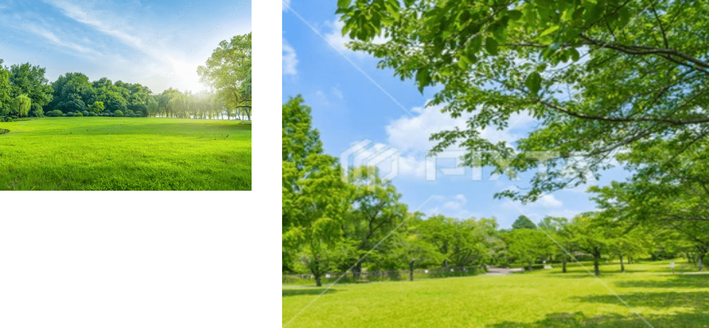

art&forestRyu-nan
創造と解放の場所わたしたちは森で繋がっていく。
ひとりのとき、ふたりのとき、みんなでいるとき。
森は、命を生み出し、
心を、身体を、再生してくれる。
集まり、離れ、包まれ、放たれる。
そう、わたしたちは森で生きていく。

Artアート
Art&Forest Ryu-nan

ひとりの人の中には、いろいろな「自分」が存在します。
正解はひとつではないように、本当の「自分」もひとつではありません。
さまざまな出会いや役割の中で、自身の多様さのすべてを包含しながら、
多面的で流動的な、新しい「自分」を開放（＝解放）していくのです。
Forestフォレスト
Art&Forest Ryu-nan

ひとつだけの「自分」ではなく、さまざまな「自分」を受け入れ、
育ててくれる森。
人がどんな状態で森に入ろうと、さまざまな状況や他者との関係性の中で、
また自然とのつながりを通じて「自分」が調和していきます。
それぞれの「自分」に応じた新しい発見や、成長を促していくことができる、
創造と開放の場所なのです。
人が集い交流を育み
ここにしかない時間を共有しよう
ここにしかない時間を共有しよう